01
Introduction
‘tenderly, timidly ’ is an immersive audio-visual installation that explores how we perceive and emotionally react to the space within our constructed environment when it is manipulated with light, sound, and movement, while suggesting a conscious approach that is gentler and slower in pace. It consists of a circular kinetic fabric sculpture that viewers stand inside, with a mechanism that broadens and constrains the space that the fabric creates within the circle, simulating a buildup and release of bodily sensations (breathing, tension). Illuminated by a single diffused blue light, a transcendent ambient track accompanies the entire piece.
02
Impetus
I undertook this project in a search for a therapeutic and calming response to dealing with sensory issues, as well as creating a space that encourages introspection. I want people to take a moment and reflect on their awareness of each environment they inhabit; how does it change their mood and energy? Do they feel safe? After suffering from a panic disorder myself, which I dealt with long-term using medication, I have a completely new way of navigating the world around me. This new awareness comes with the realization that not all people interact with spaces at the same ease as most people do, especially in public—harsh lighting can often cause nausea and dizziness, while tight crowded spaces can create anxiety.
While being in these spaces is a short-term experience, I began to seek a way to metaphorically address a healing method for myself in the form of an immersive installation that exists outside of my safe space (home). The opening and closing of the fabric structure was an investigation in creating a physical representation of the 4-7-8 breathing exercise that I relied on to help with the feeling of incoming panic attacks. These numbers guide my breathing: inhale for four seconds, hold for seven seconds, and exhale for eight seconds. This specific exercise is a great trick to feel more in control of my mind and muscle connection by sending the signal to relax from holding my breath for an extended period of time. While the movement of my installation is not timed for this exact exercise, it serves as a representation of it.
03
Audience
My project is for people who seek some kind of escapism or respite from reality, and all of the baggage it comes with: mental health issues, disenchantment with the world around us, and other daily struggles. Specifically, the community of practice my work focuses on are people who experience situations of sensory overstimulation or deprivation, from panic attacks to depressive episodes. With that, my project intends to create a positive and healing sensory experience, the core of which relies on the audio-visual effects and the moving, radial fabric sculpture that visitors can step inside of or view from the outside.
This piece is oriented towards the fine arts community/gallery settings, intentionally displayed in spaces that are aligned with the aesthetic and conceptual values of this piece.
04
Context
Precedents for this project include installation work by Bill Viola, Doug Aitken, Robert Irwin, Hans Haacke, and Studio DRIFT. Viola and Aitken both create high quality audio-visual installations that often feature slow-motion, brooding videos projected onto something large. I am inspired by Irwin's explorations of perception in relation to light and space, while Haacke's work and Studio DRIFT's project EGO manipulate fabric to create such stunning movement and composition.
 Bill Viola, Inverted Birth
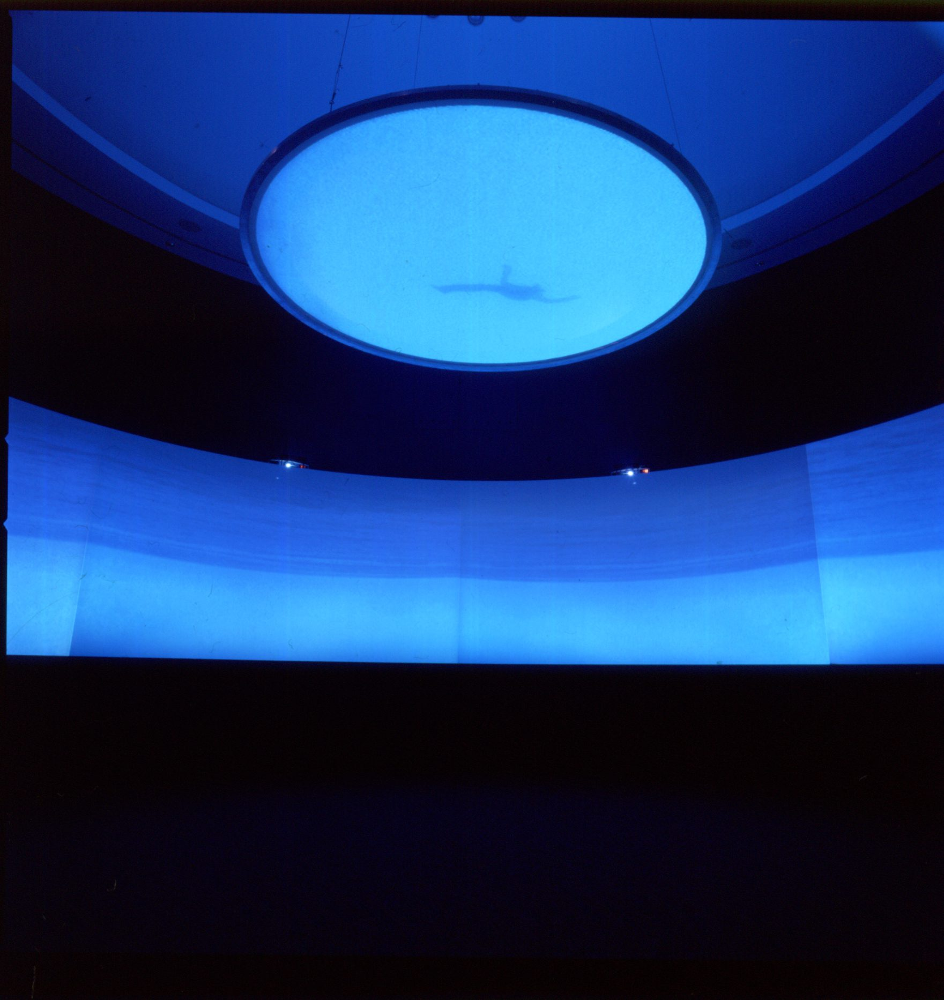
Doug Aitken, New Ocean
Bill Viola, Inverted Birth
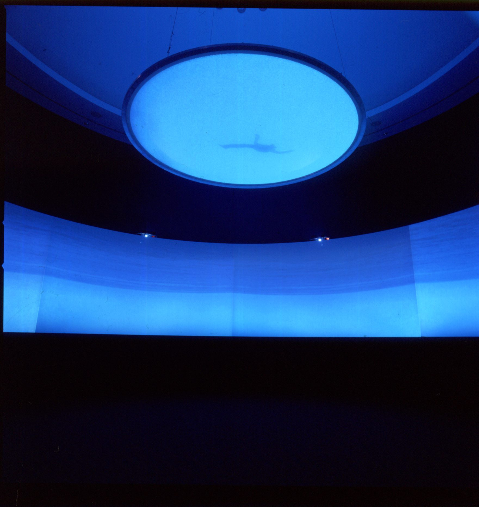
Doug Aitken, New Ocean
 Robert Irwin, Slant/Light/Volume
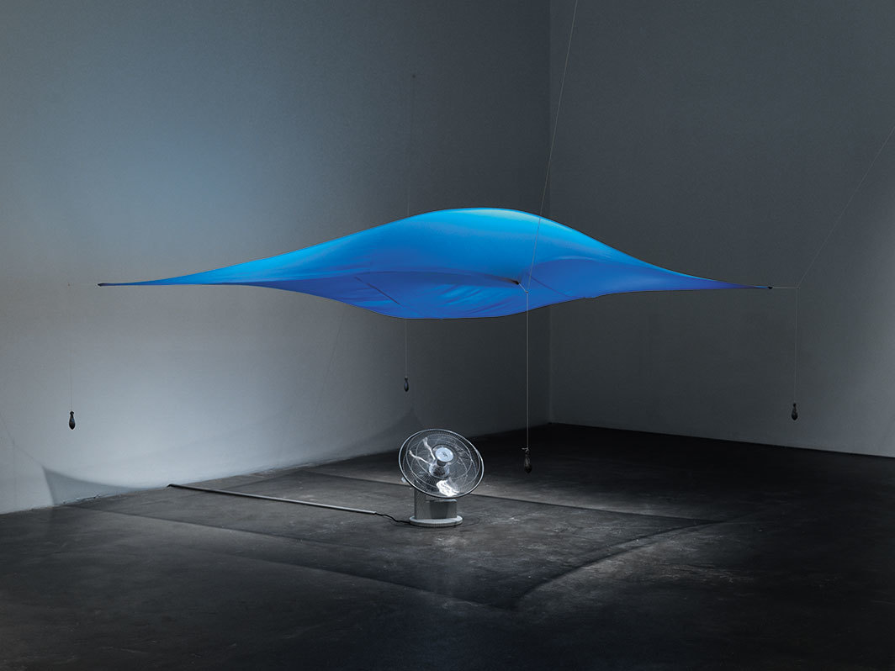
Hans Haacke, Blue Sail
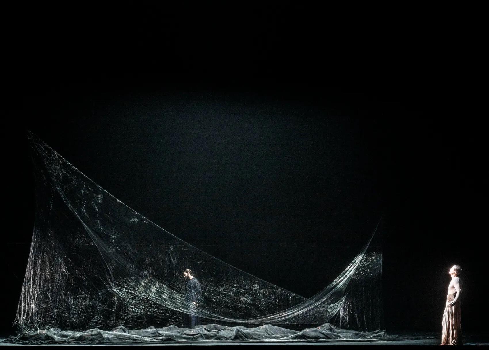
Studio DRIFT, Project EGO
Robert Irwin, Slant/Light/Volume
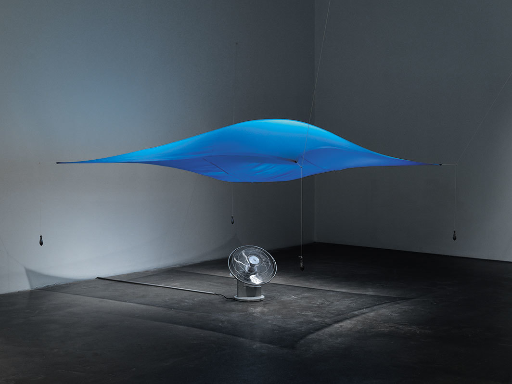
Hans Haacke, Blue Sail
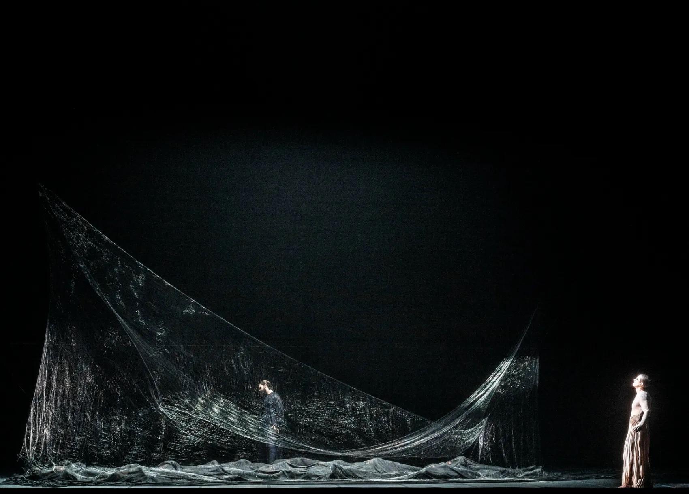
Studio DRIFT, Project EGO
In a larger aesthetic context, I’m extremely inspired by the collaboration between ambient and electronic musician Malibu and her friend and photographer Igor Pjörrt, whose projects have become my favorite visual style for a musical genre. Malibu’s work also inspired the ambient soundscape I produced for this installation.
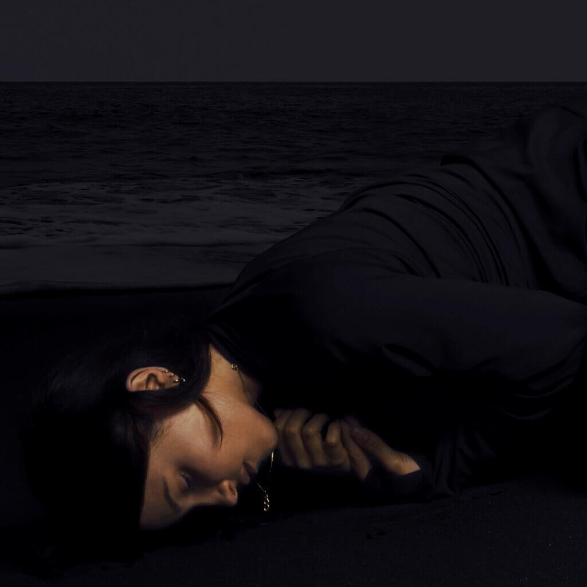
Cover artwork for Malibu's EP 'Palaces of Pity' by Igor Pjörrt
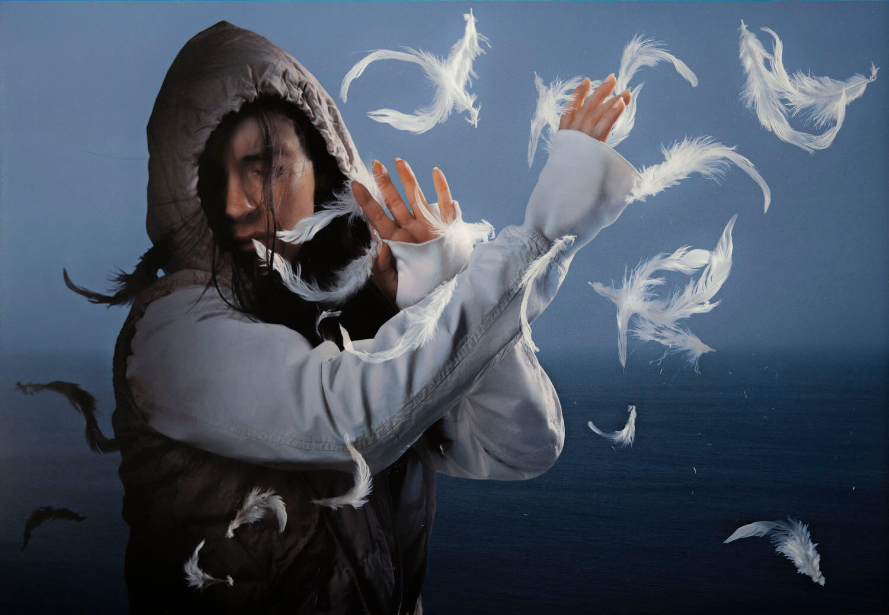
Malibu for Fact Magazine Spring-Summer 2022 by Igor Pjörrt
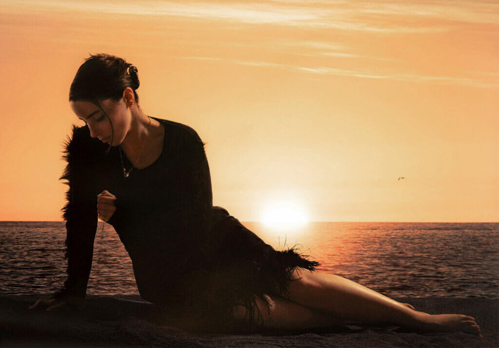
Malibu for Fact Magazine Spring-Summer 2022 by Igor Pjörrt
Stage, production, and sound design of concerts are a huge inspiration to my work as well. Two concerts I attended that guided this project aesthetically were the Caterina Barbieri show at Pioneer Works on March 28 this past spring, and Oklou’s performance at Elsewhere on December 1, 2021. Both are electronic artists, but Oklou’s discography differs from Barbieri’s by being guided by vocals. At Barbieri’s show, I was stunned by her elaborate lighting and stage design—the tall and spacious venue was completely filled with light fog, instantly turning the rays of spotlights and projections into three dimensional entities as they stretched across the room’s expanse. Oklou’s songs and music videos are very magical and dreamy, while suggesting a new way of looking at nature and our surroundings.
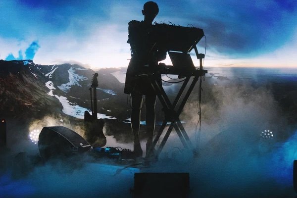
Caterina Barbieri live
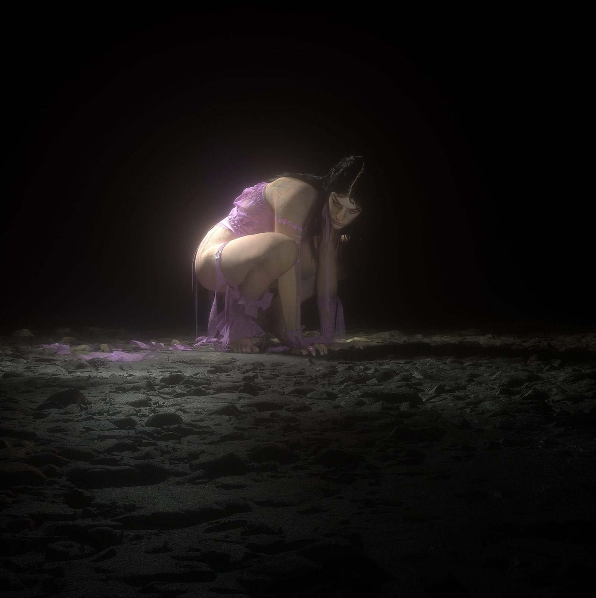
Oklou in 'SGSY' lyric video
05
Methodology
The prototyping process for creating this installation went through two major stages. The first trial of creating a motorized mechanism that a piece of fabric can attach to for the growing and shrinking radial space resembled the inner workings of an umbrella. I prototyped this mechanism first using plywood, followed by a larger version consisting of laser-cut acrylic. In user testing, these models proved to be too heavy and inconsistent—constantly tipping while being hung from the ceiling, with the moving ‘legs’ prone to warping under their own weight.
From this mechanism I shifted to a new approach, which I referred to as a fabric sculpture. Using several yards of white tulle fabric, my friend Christian assisted me in sewing a structure that resembled a cylinder—about nine feet tall and six feet in diameter. The fabric ‘walls’ were gathered at the top, so when expanded, the diameter could go from six to nine feet.
Mechanizing the fabric sculpture began with testing different motors out for speed and torque, and I found a good fit using a NEMA-17 stepper motor. My idea was to use the spinning motion of the motor to spool semi-elastic fishing wire onto, which would be attached to a point of the fabric wall. I originally wanted several points of contact to aid in the expansion and contraction of the sculpture, but due to power limitations on the Arduino board, I cut that number down to four contact points using three motors (two motors pulled at the front two sides, while one motor with two fishing wires attached to it pulled at the back two sides). I created the spool on the motor by attaching two circular plates of laser-cut acrylic at each end of the motor arm, and securing the fishing wire between them. I used custom mounts to zip-tie the three motors to the ceiling struts.
I installed the fabric sculpture to the ceiling at thirty-two points around the circumference of the canopy to ceiling struts. I strung each piece of fishing wire through a contact point and instead of tying the string, I used metal jewelry beads to crimp the wire in a loop to hold it in place. As a quick fix, I opted to wrap the other end of the string to the ceiling struts and used masking tape to secure it.
The last element I added were the light and sound pieces. The blue light at the center of the ceiling, above the fabric sculpture, was created by rolling up a neon LED strip and placing it in between two cut-out pieces of corrugated plastic. I further diffused the light by placing more opaque fabric at the top of the sculpture to bounce off the sculpture and ceiling for a glowing effect. I produced a looped ambient arrangement, which plays from a soundbar installed from the ceiling as well.
Rendering of acrylic spool on motor arm
06
Reflection
This project has had some major changes throughout the iteration process, but the core motif of creating a moving space has remained the same. I initially had the idea to project onto the sides of the fabric, or later, to have a rear projection from the ceiling down onto the top canopy of the fabric. I was imagining scenes of nature or close-ups of people, but nothing too specific. Later, I scrapped this idea for a more minimalist approach of just using a single light.
The idea behind my thesis was to somehow bring myself peace and closure to the negative fallout of developing a panic disorder. The first time I got the project to fully work with all of the elements installed, I lay down on the floor underneath it and just became still. I reflected on all of my time as a student that is now coming to an end, of the times I lived through during all of this, and the person I’ve become after experiencing these past four years. Inside this jellyfish-adjacent cover of sheer fabric and soft blue light, I exhaled and closed my eyes.
07
Credits
Special thanks to Xin Xin and Ernesto Klar for guiding and supporting this project.
Fabric sewing + construction: Christian Olarte
Documentation photo + video: Macie O’Neil
Documentation audience volunteers: Dasha Balashova, Tanner Hemmingsen, Andy Hilfiger, Sydney Maggin, Macie O’Neil, Jeronimo Rojas, Lou Salazar, Becca Snyder, and Maya Valencia.
This website was designed and coded by Anya Osipov in May 2023. Fonts in use are Gerstner Programm and Times Now.
